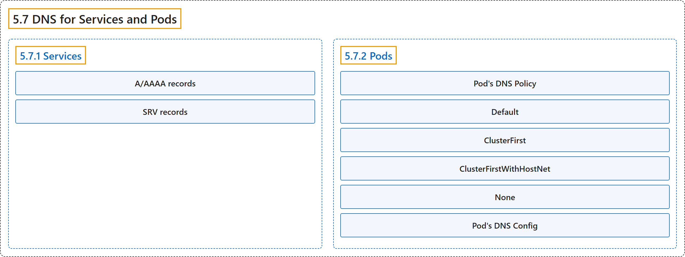

5.7 DNS for Services and Pods
Classification

Glossary
| Term | Definition | 中文翻译 | Source |
|---|---|---|---|
| 5.7 DNS for Services and Pods Service 与 Pod 的 DNS |
(context) "Kubernetes creates DNS records for Services and Pods." | （语境）Kubernetes 会创建 DNS 记录，对象是 Service 和 Pod。 | The Kubernetes Authors, n.d., "DNS for Services and Pods", para. 2 |
| 5.7.1 Services Service |
(No definition) | （无定义） | The Kubernetes Authors, n.d., "Services" |
| A/AAAA records A/AAAA 记录 |
""Normal" (not headless) Services are assigned DNS A and/or AAAA records, depending on the IP family or families of the Service" | “普通”（非无头）Service 会被分配 DNS A 和/或 AAAA 记录，取决于 Service 的 IP 协议族 | The Kubernetes Authors, n.d., "A/AAAA records", para. 1 |
| SRV records SRV 记录 |
"SRV Records are created for named ports that are part of normal or headless services." | SRV 记录为命名端口创建，这些端口属于普通或无头 Service。 | The Kubernetes Authors, n.d., "SRV records", para. 1 |
| 5.7.2 Pods Pod |
(No definition) | （无定义） | The Kubernetes Authors, n.d., "Pods" |
| Pod's DNS Policy Pod 的 DNS 策略 |
"DNS policies can be set on a per-Pod basis." | DNS 策略可以按 Pod 逐个设置。 | The Kubernetes Authors, n.d., "Pod's DNS Policy", para. 1 |
| Default Default |
""Default": The Pod inherits the name resolution configuration from the node that the Pods run on." |
“Default”：Pod 继承名称解析配置，来自其所在的节点。 |
The Kubernetes Authors, n.d., "Pod's DNS Policy", para. 2 |
| ClusterFirst ClusterFirst |
""ClusterFirst": Any DNS query that does not match the configured cluster domain suffix, such as "www.kubernetes.io", is forwarded to an upstream nameserver by the DNS server." |
“ClusterFirst”：任何与所配置的集群域后缀不匹配的 DNS 查询（例如“www.kubernetes.io”）都由 DNS 服务器转发给上游域名服务器。 |
The Kubernetes Authors, n.d., "Pod's DNS Policy", para. 3 |
| ClusterFirstWithHostNet ClusterFirstWithHostNet |
""ClusterFirstWithHostNet": For Pods running with hostNetwork, you should explicitly set its DNS policy to "ClusterFirstWithHostNet"." |
“ClusterFirstWithHostNet”：对以 hostNetwork 运行的 Pod，应显式设置其 DNS 策略为“ClusterFirstWithHostNet”。 |
The Kubernetes Authors, n.d., "Pod's DNS Policy", para. 4 |
| None None |
""None": It allows a Pod to ignore DNS settings from the Kubernetes environment." |
“None”：它允许 Pod 忽略来自 Kubernetes 环境的 DNS 设置。 |
The Kubernetes Authors, n.d., "Pod's DNS Policy", para. 5 |
| Pod's DNS Config Pod 的 DNS 配置 |
"Pod's DNS Config allows users more control on the DNS settings for a Pod." | Pod 的 DNS 配置让用户对 Pod 的 DNS 设置有更多控制。 | The Kubernetes Authors, n.d., "Pod's DNS Config", para. 1 |
References
The Kubernetes Authors. (n.d.). DNS for Services and Pods. Kubernetes Documentation. Retrieved October 31, 2026, from https://kubernetes.io/docs/concepts/services-networking/dns-pod-service/